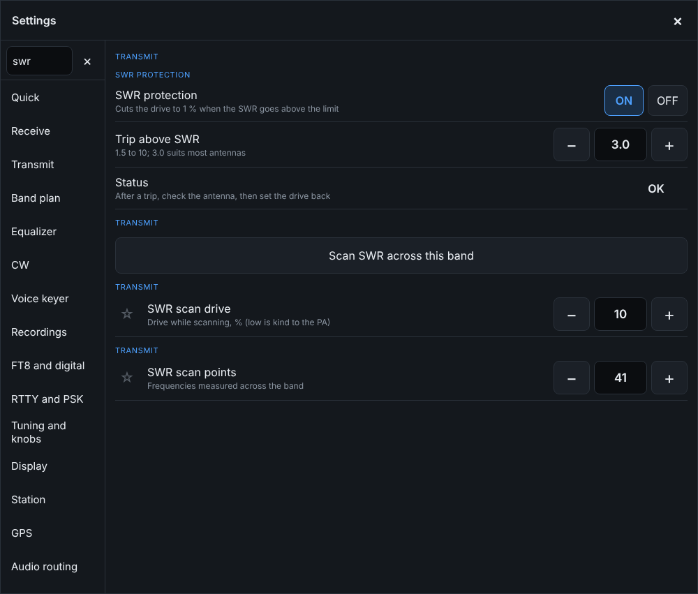

jeSDR wiki#
jeSDR turns an sBitx HF transceiver into a network transceiver with its own touch-friendly screen. It runs on the radio's Raspberry Pi 4 or Pi 5, drives the hardware, and serves the radio to SDR, logging and digital-mode programs on your network: TCI, HPSDR Protocol 1 and Hamlib. FT8/FT4/FT2, JS8 (with JS8Call), JTTY, RTTY, PSK, a CW decoder with macros, FreeDV RADE V1, a voice keyer, DX cluster spots and a logbook are built in.
Project website: www.jeSDR.com.

This wiki explains every screen and setting and how to use them. The same
pages are the operating manual built into the radio: open
https://<radio>:8443/manual, or tap Manual on any settings page; it
works without internet. A searchable copy is at
jeSDR.com/manual. jeSDR is
closed source; downloads are on the
releases page.
Getting started#
- Install jeSDR from the SD card image, the one-line installer or the package.
- Open the radio's screen, or
https://<radio>:8443/from any browser on your network. - Set your call sign and grid: More → Station (Station and logbook).
- Pick your country's transmit band plan: More → Band plan (Band plan).
- Before the first transmission into an antenna, run the PA power calibration into a dummy load.
Using the radio#
- The main screen: header, scope and waterfall, control strip, band and mode, volume
- Quick page: your own shortcuts
- Receive: gain, auto IF gain, filters, noise reduction, squelch
- Transmit: drive, mic, compressor, PTT, tune, SWR protection, a browser microphone, CTCSS
- Band plan: country transmit limits and US privilege ribbons
- Equalizer: receive and transmit equalizers
- CW, voice keyer and recordings
- Digital modes: FT8, FT4, FT2, JS8, JTTY, RTTY, PSK, RADE
- Tuning, knobs and MIDI
- Display and themes
Station and connections#
- Station, logbook, country file and GPS
- Headset and USB audio: a USB headset or sound card as headphones and microphone
- Clock and band conditions: network time, the RTC, solar flux, K index and MUF
- Connecting other programs: WSJT-X, SDROxide, GridTracker, loggers, audio routing, network servers
- PA power and calibration
- Diagnostics
- Power, backup, shut down and About
The radio and its SD card#
- Opening the case and swapping the SD card
- SD card images and backups: writing the image, starting from USB, copying or backing up the whole card
- Managing the jeSDR service: stop, start, restart, start at boot, status and logs from a terminal
- sBitx hardware and upgrades: specifications, microphones, Raspberry Pi 5, Touch Display 2
- No RF output: settings, self-tests and the PA chain
Reference#
- All settings A–Z
- Console commands
- Safety and limitations
- Troubleshooting
Help and community#
Questions, ideas and 3D-printable parts (Pi 5 side plates, the Touch Display 2 bezel) are shared on the Discord server. Videos are on the Radio Electronics Hub YouTube channel. Report a bug from the project website.
How settings work#
Every setting lives on the radio, so the touchscreen, a laptop and a phone all see the same values; a change in one browser shows in all of them at once. Open More (bottom right) for the settings menu. Each setting has a plain name, a line of help and a ☆ that adds it to the Quick page. Search at the top of the menu finds a setting by name, help text or common words ("swr", "volume", "power").

Each setting also has a console name (shown in the tables on these pages),
which you can type on the console, e.g. WPM 20.
jeSDR is Copyright © 2026 J. Kujawa, W9JES. It is an independent project, built to run on sBitx hardware, and is not affiliated with or endorsed by the makers of the sBitx.